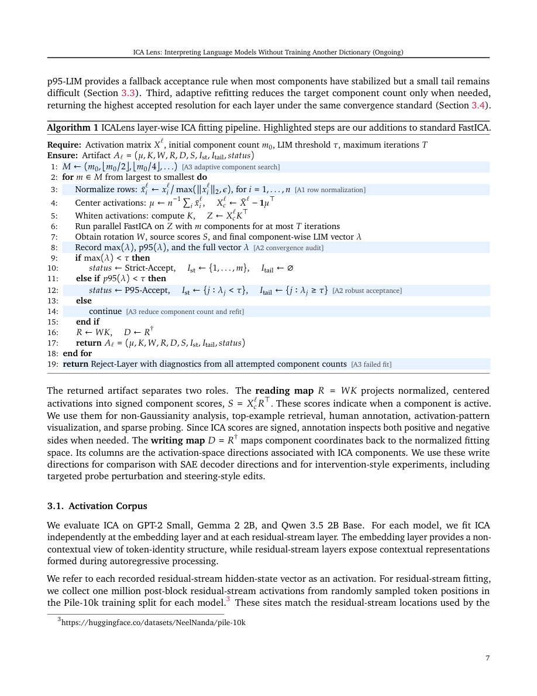

#1
★ 7/10
ICA Lens: Interpreting Language Models Without Training Another Dictionary
ICA镜头：无需训练另一个词典即可解读语言模型

图 Figure · Page 7 of paper
🎯 用经典ICA方法高效解读大语言模型内部结构，无需训练稀疏自编码器
ICALens uses classic ICA to interpret language model internals efficiently, without training expensive neural dictionaries.
🗣️ 一句话比喻 · Plain-English Analogy就像侦探破案时，先用放大镜观察现场已有的线索，而不是马上花大价钱建一座实验室——ICALens就是那把放大镜，让你在动用重型装备之前，先高效地看清语言模型内部藏着的"秘密"。Think of it like a detective who uses a simple magnifying glass to spot clues already at the crime scene, instead of immediately spending a fortune building a full forensics lab. ICALens is that magnifying glass — it reveals the secrets already hiding inside an AI model, quickly and cheaply, before you ever need to call in the expensive equipment.
| 维度 | 中文 | English |
|---|---|---|
| ❓ 待解决 的问题 |
AI研究者想要理解大语言模型"脑子里在想什么"——找到那些有意义的方向或特征。现有的主流工具叫"稀疏自编码器"（SAE），但它需要耗费大量时间和算力来训练、存储一个巨大的字典，就像每次查单词都要先手写一本百科全书。这个瓶颈让快速探索模型内部变得很困难，也让人不禁想问：在训练那本大字典之前，模型的激活数据里其实已经藏了多少可解释的结构？ | AI researchers want to understand what's happening "inside" large language models — finding directions or features that correspond to meaningful concepts. The current go-to tool, called Sparse Autoencoders (SAEs), requires training and storing a massive neural dictionary, which is slow and expensive. This makes quick exploration hard, and raises a key question: how much useful structure is already hiding in the model's raw data, before you ever train another dictionary? |
| 💡 解决 的亮点 |
• 重新发现了经典方法ICA的价值：证明它在大语言模型可解释性任务中被严重低估了，过去用得不好是因为实现方式不稳定。 • 推出ICALens工具流：专门为大语言模型优化的GPU并行FastICA流程，加入了针对LLM的稳定性配方和更好的拟合诊断工具，让分析结果可靠、可审查。 • 无需梯度训练：不需要像SAE那样对每一层做基于梯度的字典训练，节省大量资源，却能找到同样人类可解读的方向。 | • Rediscovers ICA's value: proves that this classic statistical method has been underestimated for LLM interpretability — past failures were due to brittle implementations, not the method itself. • Introduces ICALens toolkit: a GPU-optimized FastICA pipeline with LLM-specific stability fixes and diagnostic tools, making results reliable and auditable. • No gradient training needed: recovers interpretable directions layer-by-layer without expensive neural dictionary training, saving significant compute. |
| 🧪 实验 内容 |
在GPT-2 Small、Gemma 2 2B、Qwen 3.5 2B Base三个不同规模的语言模型上进行了实验。使用了SAEBench作为评估框架，对比的基线是公开可用的稀疏自编码器（SAE）。评估指标包括两个核心任务：稀疏探测（sparse probing，测试方向能否区分特定概念）和目标探针扰动（targeted probe perturbation，测试能否通过修改方向来影响模型行为）。还进行了人工可解释性评估，让人类判断恢复出的方向是否有意义。 | Experiments were run on three language models of varying sizes: GPT-2 Small, Gemma 2 2B, and Qwen 3.5 2B Base. The evaluation framework used was SAEBench, compared against publicly available Sparse Autoencoders as baselines. Two main tasks were evaluated: sparse probing (can the directions tell apart specific concepts?) and targeted probe perturbation (can tweaking these directions actually change model behavior?). Human evaluators also judged whether the recovered directions felt meaningful and interpretable. |
| 📊 实验 结果 |
在SAEBench评估中，ICALens在稀疏探测任务上与公开SAE相当（competitive），在小到中等预算下的目标探针扰动任务上超过了SAE（outperforms）。具体来说，ICA在无需任何梯度训练的情况下就达到了这些结果，大幅降低了计算成本。跨GPT-2 Small、Gemma 2 2B和Qwen 3.5 2B三个模型均验证了该方法的有效性和稳定性，表明ICA不应被视为弱基线，而是一个高效互补的"第一层镜头"。 | On SAEBench, ICALens matches public SAEs on the sparse probing task and outperforms them on targeted probe perturbation under small-to-medium compute budgets — all without any gradient-based training. Results held consistently across GPT-2 Small, Gemma 2 2B, and Qwen 3.5 2B Base, demonstrating the method's reliability across different model families and sizes. The cost savings are significant: no per-layer neural dictionary training is required. |
| 🏁 结论 | 本文证明了经典的ICA方法在大语言模型可解释性研究中被严重低估——只要实现得当，ICA能在无需训练昂贵神经字典的前提下，高效恢复出人类可读的模型内部方向，并在关键评估指标上媲美甚至超越主流的稀疏自编码器。 | This paper proves that ICA, a decades-old statistical method, is a serious and underestimated tool for understanding language models — when implemented properly, it matches or beats expensive modern methods at a fraction of the cost, making it a valuable "first look" before committing to heavier tools. |
| 🔗 论文 链接 |
arXiv: 2606.11722v1 · 📥 PDF | |
⚙️ Method · 方法详解
ICA（独立成分分析）是一种经典统计方法，核心思想是：有意义的方向往往不像随机方向那么"钟形对称"（高斯分布），因此可以通过寻找"最不高斯"的方向来找到可解释特征。ICALens在这个基础上做了三件事：1）用GPU并行加速了FastICA算法，让它能快速处理大规模语言模型的激活数据；2）加入了专门针对LLM激活数据特点的稳定性配方，避免结果随机乱跑；3）提供了诊断工具帮助研究者判断分析结果是否可靠，整个流程像一条可信赖的装配线，逐层分析模型内部。
ICA (Independent Component Analysis) is a classic statistics trick: meaningful features in a model tend to have "spiky" or unusual distributions, unlike random noise which looks like a perfect bell curve. ICALens hunts for the most "non-bell-curve" directions in the model's activations — those are likely the interpretable ones. The team then built three improvements: (1) a GPU-parallelized FastICA pipeline for speed, (2) LLM-specific stability tricks so results don't randomly collapse or flip, and (3) diagnostic tools to verify whether each recovered direction is trustworthy — all working layer by layer through the model.
🌟 Why It Matters · 为什么重要
理解AI模型内部工作方式是确保AI安全、可控的关键一步。ICALens让研究者用更低的成本、更快的速度探索语言模型的内部结构，有助于加速AI可解释性研究，让AI的"思维"更透明，最终帮助人类更好地监督和信任AI系统。
Understanding what's happening inside AI models is crucial for making them safer and more trustworthy. By offering a cheap, fast, and reliable alternative to expensive tools, ICALens lowers the barrier for researchers to audit and explore AI model internals — accelerating the broader goal of transparent, explainable AI that humans can actually oversee.